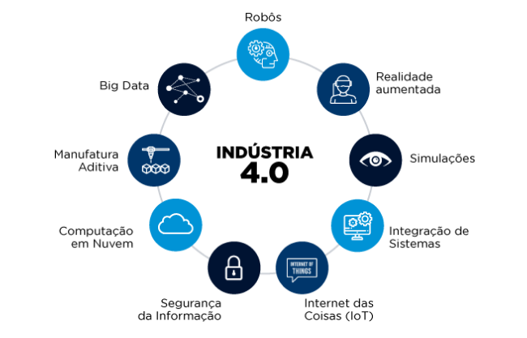
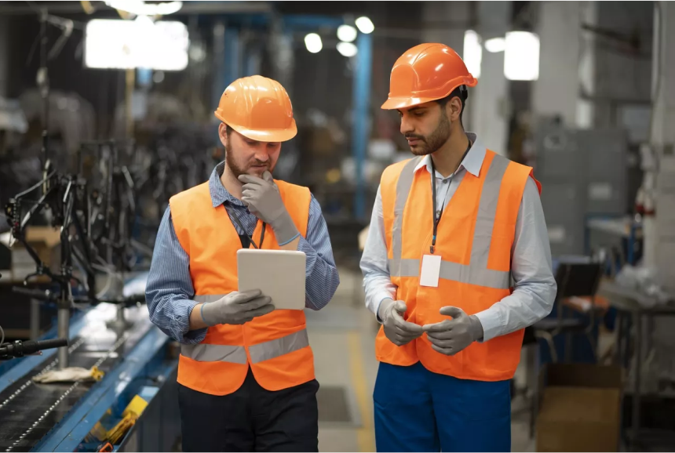

PÍLARES DA INDÚSTRIA 4.0
DE REVOLUÇÃO A AUTOMAÇÃO
DIGITALIZAÇÃO
Antes que a otimização aconteça, as operações existentes devem ser digitalizadas para fornecer visibilidade sobre tudo. Isso facilita a detecção de falhas e problemas em tempo real. Os fluxos de trabalho de digitalização permitem que as atividades sejam monitoradas e gerenciadas imediatamente. Enquanto atrasos custam tempo e dinheiro, esse processo dá celeridade e fornece notificações instantâneas quando as operações são contrárias ao cronograma. Ele também cria um banco de dados que pode ser usado para otimizar as operações.
SENSORIZAÇÃO
O primeiro passo para a interconectividade de máquinas é a sensorização. Sensores são uma forma econômica de medir variáveis, como temperatura, umidade, qualidade do ar, movimento, vibração e outros tipos. O equipamento detecta problemas automaticamente e transmite disparos do ponto de vista de software e hardware. Por exemplo, a instalação de sensores de temperatura sem contato é capaz de ajustar a velocidade das engrenagens em uma fábrica.
OTIMIZAÇÃO
Depois da coleta de dados digitalizados, da sensorização e integração, a transição dessas informações é a próxima prioridade. Ou seja, a otimização é obtida por meio de análises, simulação, manutenção preventiva. Os objetivos são: reduzir custos de produção e melhorar a qualidade de produtos e serviços. É bom lembrar que a automação não implica a exclusão de pessoas no processo. A tecnologia cria oportunidades para engenheiros industriais, cientistas de dados, profissionais de produção e estatísticos. Isso requer uma nova geração de especialistas para obter melhorias.
ANÁLISE
Hoje é possível monitorar o trabalho da equipe com ajuda de ferramentas, desde a frequência da carga horária a tarefas, demandas e índices de desempenho coletivo ou individual. Outro ponto é a redução de erros e retrabalhos. Todos estão sujeitos a falhas, mas o software de gerenciamento de tarefas garante que isso não aconteça.
GESTÃO
Documentar a rotina da empresa é o passo principal para encontrar pontos de melhoria. Sendo assim, um software de ERP (Enterprise Resource Planning ou Sistema Integrado de Gestão Empresarial) é a alternativa ideal para manter os arquivos em ordem e, ao mesmo tempo, ganhar mais poder na tomada de decisão. O software compila as informações coletadas por todos os departamentos e transforma tudo em dados estratégicos. Ele exerce um papel essencial na gestão. Além disso, traz uma série de vantagens à instituição, como: integração dos sistemas, comunicação eficaz, respostas em tempo real, segurança e soluções que proporcionam maior competitividade.
CONTROLE DE QUALIDADE
Para que os Sistemas de Gestão da Qualidade e os profissionais estejam alinhados e contribuam com benefícios básicos para a organização, os processos e dados de qualidade precisam ser parte integrante e integrada do sistema. Na Indústria 4.0, grandes quantidades de dados ficam disponíveis para o pessoal da Qualidade em tempo real e de diferentes fontes simultaneamente. Essas informações devem ser usadas para permitir uma tomada de decisão rápida e situacional. Para impulsionar a inovação, o ideal é melhorar a qualidade geral. A transformação é a chave, principalmente se os seus investimentos em qualidade estão focados em entregar os resultados necessários. Além disso, a participação ativa da equipe nas iniciativas de planejamento contribui para melhorar a percepção do cliente quanto ao produto e à marca. Com vimos, a otimização de processos aliada à automação promove um ambiente de gestão inteligente. Esse deve ser o primeiro passo do processo, pois ele é essencial para conquistar a revolução tecnológica. Assim, máquinas, sistemas e redes são capazes de trocar informações e responder às demandas de maneira rápida e eficiente. Pense nisso na hora de empreender ou turbinar os resultados do seu negócio.
